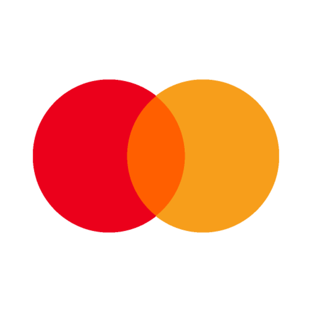
Information Security Engineer II.
Mastercard

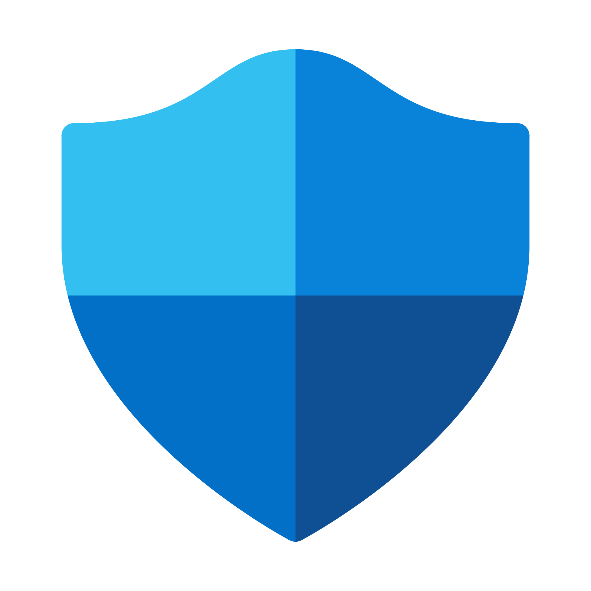
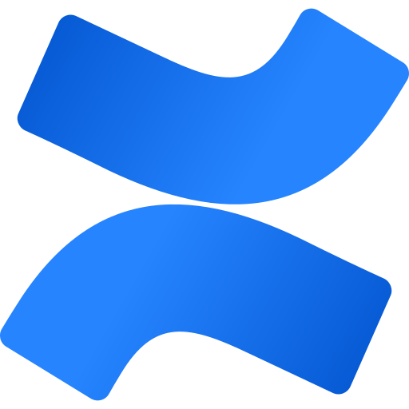

2026-01-01 - Present

Mastercard


2026-01-01 - Present
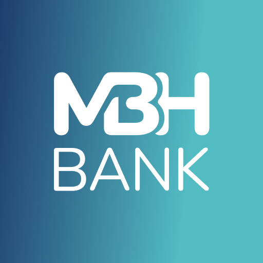
MBH Bank Nyrt.
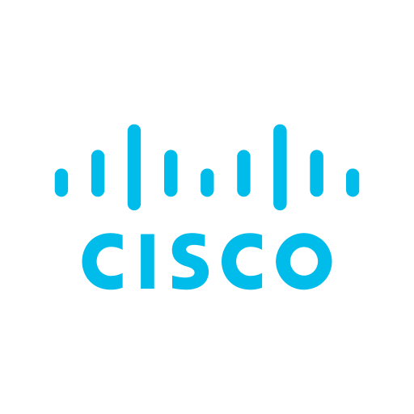
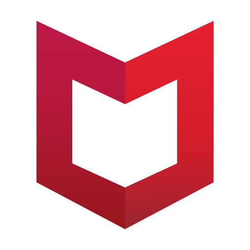
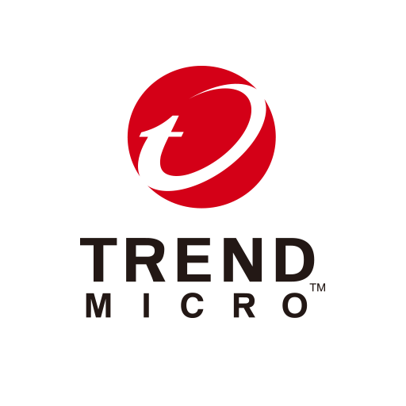
2025-01-06 - 2025-12-31
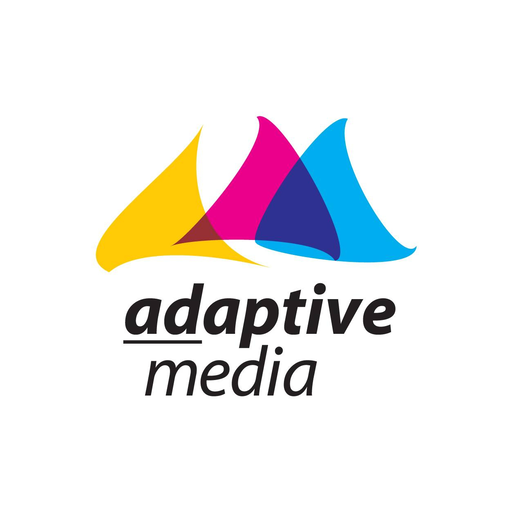
Adaptive Media Sales House
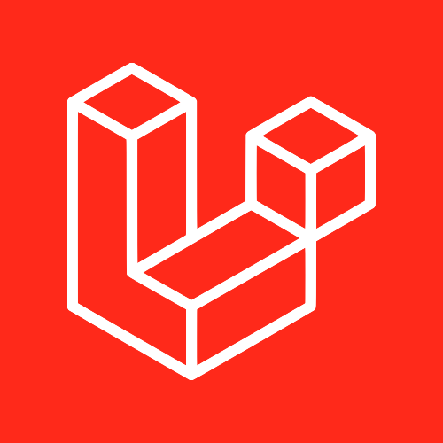

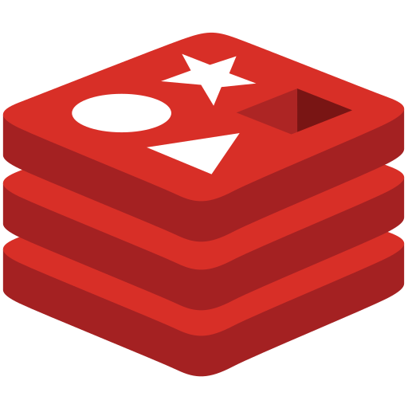
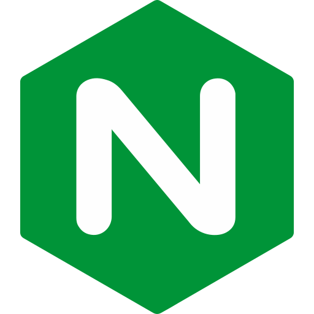
2024-01-08 - 2024-08-30
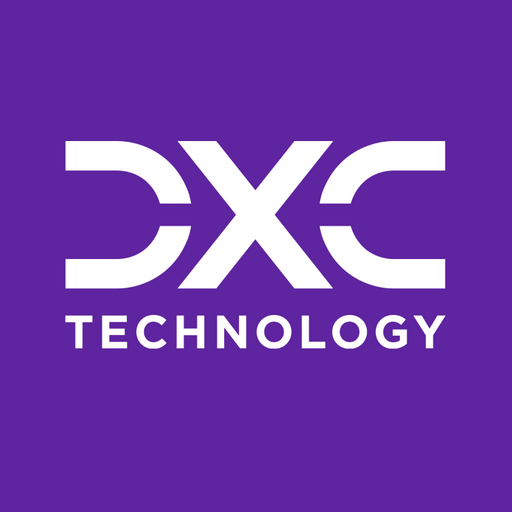
DXC Technology
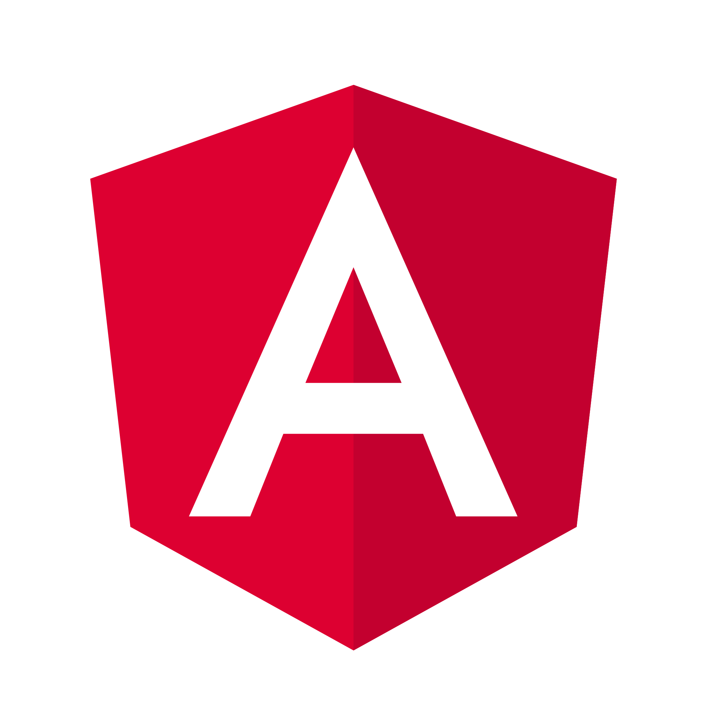
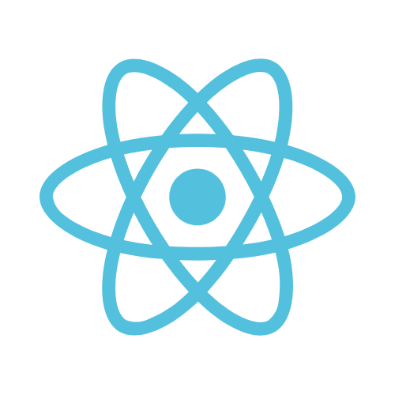
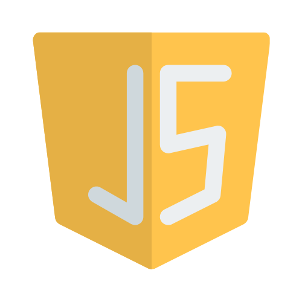
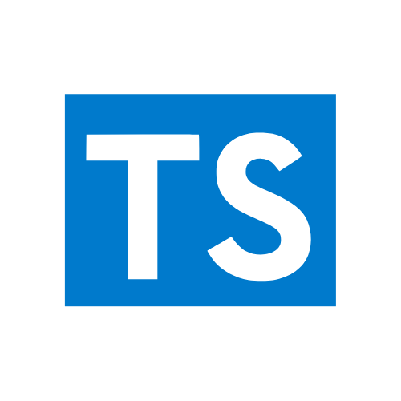
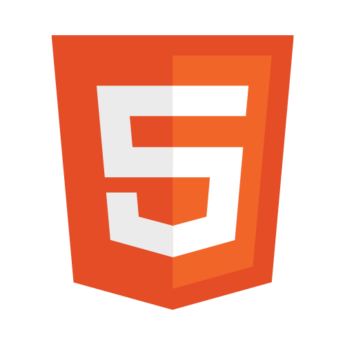
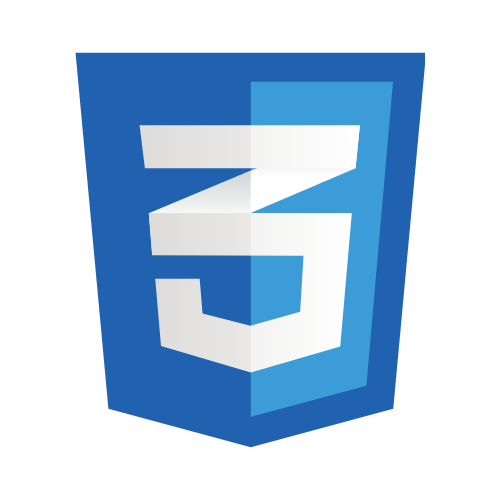
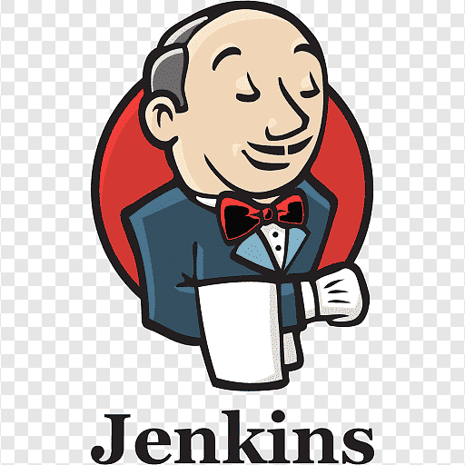
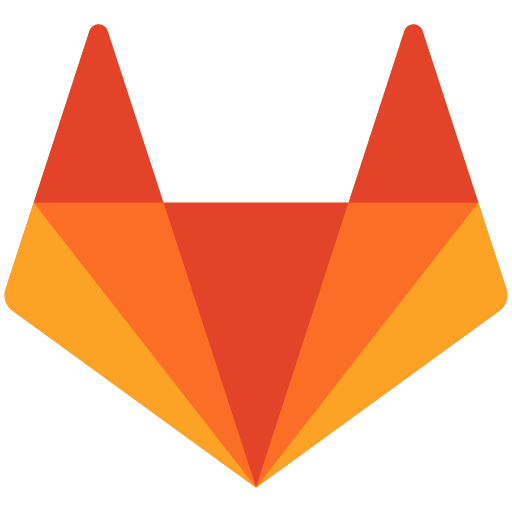

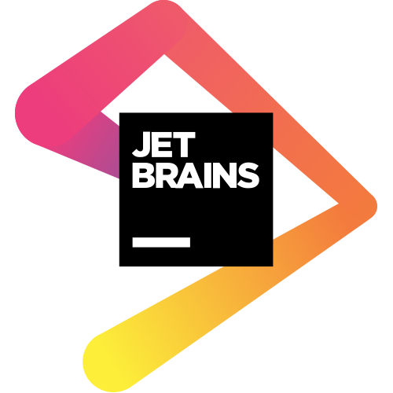
2022-12-01 - 2024-01-05
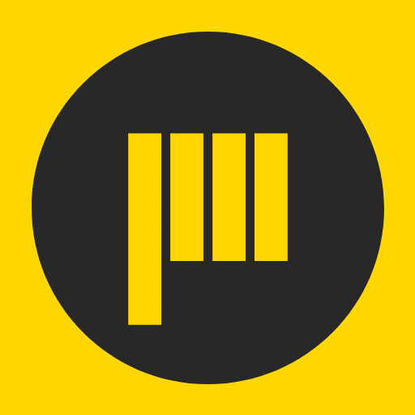
Jacsomedia Digital Agency
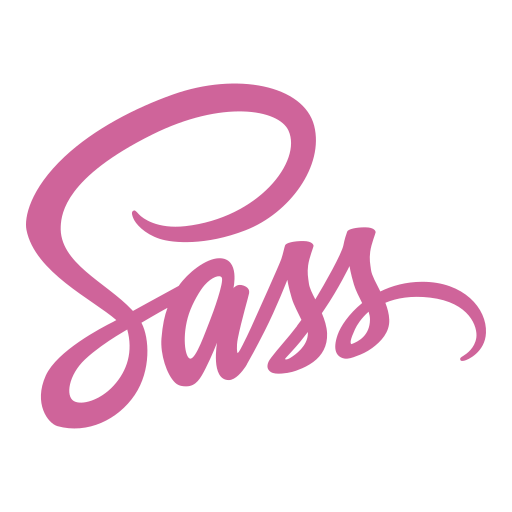

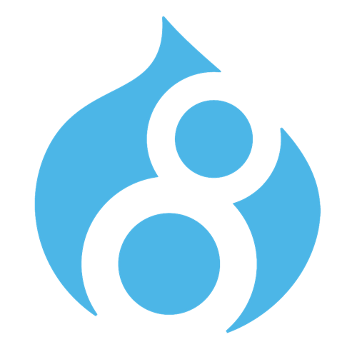
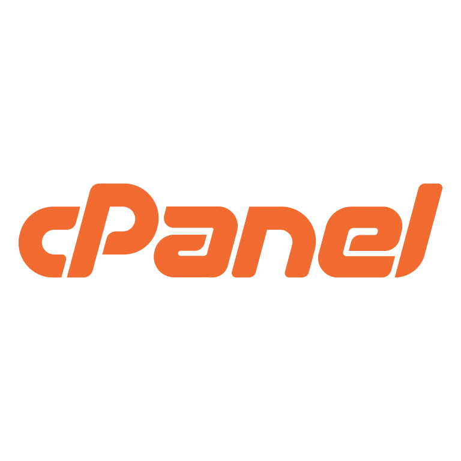
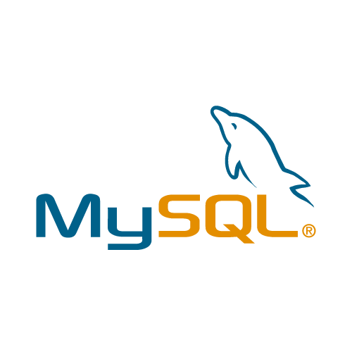
2022-02-01 - 2022-10-31
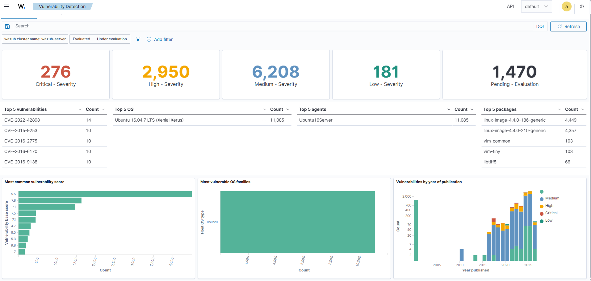
Private LabBuilt a local security lab to explore Wazuh’s vulnerability scanning, SIEM, and XDR capabilities in a controlled environment. The setup includes a deliberately vulnerable application, making it suitable for detection, monitoring, and incident analysis practice.
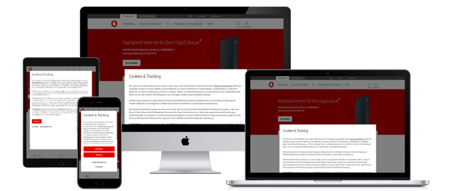
Contributed to the delivery of a large-scale enterprise project for Vodafone Deutschland, working across frontend and legacy backend areas in a complex multinational environment. The project required strong attention to quality, maintainability, and structured cross-team collaboration.